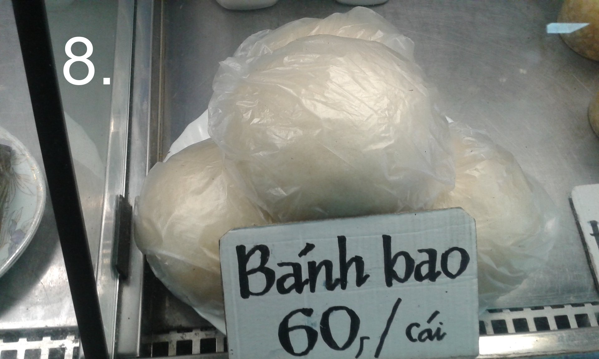

1.DURIAN
Toto prokl칤nan칠 a blaho콏e캜en칠 ovoce bych dal Sap캩 do erbu, proto쬰 podobn캩 to m치 mnoho neznal칳ch k t칠to tr쬹ici. Fandov칠 op캩vuj칤 jeho ovocnou chu콘 a originalitu. Kritici charakteristick칳 z치pach 쬿mpy, pou쬴t칳ch pono쬰k, 캜i tlej칤c칤 cibule. Jedn치 se o pom캩rn캩 drah칠 ovoce, kter칠 m치 쬷utou du쬹inu. Zkusil jsem a vcelku mi to chutnalo.Pokud by se m캩la objevit n캩jak치 dal코칤 gastro asijsko캜esk치 fuze, vid캩l bych ji v ovocn칳ch knedl칤c칤ch pln캩n칳ch durianem. STOP! Vzd치v치m se autorsk칳ch pr치v na tento n치pad, ale pokud to zrealizujete, budete m캩 zdarma krmit t캩mito knedl칤ky. 游뗵 Jinak je pravdou, 쬰 mnoho leteck칳ch spole캜nost칤 v치s s durianem nepust칤 na palubu letadla a m치 svou vlastn칤 z치kazovou ikonku vedle tekutin a zbran칤.

2.RED BULL VIETNAM
Je to energetick칳 n치poj, nesycen칳, hodn캩 sladk칳. P콏ev치쬹캩 ur캜en칳 pro asijsk칳 trh. J치 osobn캩 bych to musel 콏edit. (obchod TAMDA)
3.CITR칍NOV츼 TR츼VA
N치m s p콏칤chodem kovidu v칳razn캩 podra쬴la a to a o 100%.Dnes d치te za bal칤캜ek cca 80,- K캜. Tak pro캜 ji kupovat? Je vynikaj칤c칤 do hork칠ho 캜aje, k prokl치d치n칤 grilovan칠ho masa, jemn캩 nasekan치 v thajsk칳ch kokosov칳ch pol칠vk치ch, stejn캩 za studena macerovan치 v n치poji do fitka. P콏edev코칤m 쬰ny by si m캩ly p콏e캜칤st 캜l치nek o v칳zkumu izraelsk칳ch a indick칳ch v캩dc콢. L치tky obsa쬰n칠 v rostlin캩 aktivn캩 reaguj칤 na karcinom d캩lo쬹칤ho hrdla. (obchod BAN CA TUOI SONG)
4. ESPRESSO
Na v칳b캩r z n캩kolika druh콢 a variant. Arabica nebo Robusta v mlet칠 캜i zrnkov칠 form캩. K치va poch치z칤 z celosv캩tov캩 zn치m칠 k치vov칠 provincie Cau Dat - Da Lat ve Vietnamu. Hutn치 k치va bez v칳razn칠 acidity. M콢j moment치ln칤 favorit, chyst치m se ji prov캩콏it nejen jako ledovku (s vietnamskou Robustou m치m v tomto sm캩ru lep코칤 ohlasy, ne Arabicou), ale taky z n칤 vyzkou코칤m ud캩lat Cold Brew. (kav치rna HIPPO CAF칄 )

5.POCKY
Jsou to tak trochu ty캜inky jako od zna캜ky LU. Od jahodov칳ch p콏es o콏칤코kov칠, a po matchu. Nev칳hoda je, 쬰 v치m k TV nikdy nevysta캜칤 jedno balen칤 游뗵 (obchod CUONG GIANG)

6.KHONG DO
Je balen칳, slazen칳 zelen칳 캜aj. V칳born칳 na led캩. U jsem donutil i m칤stn칤ho provozovatele ve캜erky, aby je pro m캩 v Tamd캩 kupoval. Tenhle 캜aj prost캩 m치te r치di, nebo ne. 콎칤k치 se mu taky Zero.(obchod BAN CA TUOI SONG)
7.CH칄
Je takov칳 vietnamsk칳 dezert, zdrav칠 mls치n칤 slo쬰n칠 z mno쬽tv칤 ingredienc칤, kter칠 si sami vyberete, nebo je pro v치s m치 p콏ipraven칠 prodava캜.Obsahuje t콏eba kokos, pomelo, kuku콏ici, tapiokov칠 kuli캜ky, 쬰latinu, sladk칠 fazole apod. (bistro CH칄 SAI G칍N)

8.BANH BAO
Jsou takov칠 velk칠 knedl칤ky pln캩n칠 houbami a masem. Nikdy nezapomenu na z치vist 캜esk칳ch turist콢, co si jedli sv칠 "Ku콏e tajemn칠 chuti" a j치 jim pod nos von캩l t칤mto. Pro p콏irovn치n칤, je to takov치 variace knedlo-zelo bez zel칤 游뗵. (bistro MINH TAM)
9.SAC SAC
Na tomhle pit칤 m캩 bav칤, 쬰 obsahuje v쬯y ovocnou du쬹inu.V tomto p콏칤pad캩 se jedn치 o pomeran캜.캛asto je dostupn칳 i v pra쬽k칳ch ve캜erk치ch, paradoxn캩 ten pomeran캜ov칳 nejm칠n캩. (market TAMDA)
10.B츼NH R츼N
Je sma쬰n칳 sladk칳 dezert ve tvaru koule pln캩n칳 pastou ze sladk칳ch mungo fazol칤. Dezert m콢쬰 b칳t hladk칳, nebo obalovan칳 t콏eba sezamem. (bistro: B칔N C츼 Hai Phong)
11. MLAD칗 KOKOS
Tenhle o콏ezan칳 "n캩kolikahran" se navrt치 a br캜kem se z n캩j pije kokosov치 voda.

12. PITAYA - DRA캛칈 OVOCE
Je exotick칠 ovoce, kter칠 m치 barevnou du쬹inu a v n칤 캜ern치 sem칤nka. Diet치콏i se mohou radovat, je n칤zkokalorick칠, lze z n캩j p콏id치n칤m citr칩nu 캜i limetky a miner치ln칤 vody namixovat dobr칳 koktejl.
14.BIRDS NEST
Je energetick치 limon치da s v칳luhem z vla코tov캜칤ch hn칤zd a slin pt치k콢.Je pln치 vitam칤n콢 a podporuje mu쬽kou potenci. Zkou코eli jsme a k pit칤 se hecovali dlouh칠 minuty. Nen칤 to nejhor코칤 a jedn치 se sp칤코e o p콏칤chu콘, origin치l je pr칳 mnohem dra쮄뫆 z치le쬴tost. (obchod THU HUONG)
15. BONTEA GREEN
To jsou na코e obl칤ben칠 bonb칩ny z korejsk칠ho obchodu. Obsahuj칤 koncentr치t ze zelen칠ho 캜aje a docela na tom uj칤쬯칤me. Nyn칤 jich u voz칤m v쬯y n캩kolik bal칤캜k콢. (obchod SIEU THIC HAN QUOC)

16. SAIGON Beer
Pro piva콏e tu m치m na ochutn치vku vietnamsk칠 pivo. Jako쬾o abstinent v치m v칤ce neporad칤m. (obchod THU HUONG)
17. KOHOUT aka SRIRACHA
Je chilli om치캜ka, kterou najdete v Sap캩 snad na ka쬯칠m stole v restauraci a bistru. M치 univerz치ln칤 vyu쬴t칤, tedy pokud holdujete pikantn캩j코칤m pokrm콢m. (obchod BAN CA TUOI SONG)

18. MOCHI
Japonsk칠 r칳쬺v칠 kol치캜ky.Je mix tradi캜n칤ch kol치캜k콢 r콢zn칳ch p콏칤chut칤.Pln칤 se t콏eba 칰쬬snou ara코칤dovou n치pln칤, sezamovou pastou a pastou z 캜erven칳ch fazol칤...existuje x variant. (obchod THU HUONG)